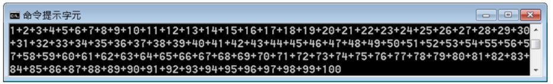

字串
May 27, 2022由字元組成的文字符號稱為字串，例如 "Hello" 字串是由 'H'、'e'、'l'、'l'、'o' 五個字元組成。
字串基礎
字串是 java.lang.String 實例，用來包裹字元陣列，可以用 "" 包括一串字元來建立字串：
var name = "justin"; // 建立 String 實例
System.out.println(name); // 顯示 justin
System.out.println(name.length()); // 顯示長度為 6
System.out.println(name.charAt(0)); // 顯示第一個字元 j
System.out.println(name.toUpperCase()); // 顯示 JUSTIN
字串是物件，自然也擁有一些可操作的方法，像是可以使用 length 取得字串長度，使用 charAt 指定取得某個字元，索引從 0 開始，使用 toUpperCase 將原本小寫的字串內容轉為大寫的字串內容。
如果已經有一個 char[] 陣列，也可以使用 new 來建構 String 實例。例如：
char[] cs = {'j', 'u', 's', 't', 'i', 'n'};
var name = new String(cs);
如果必要，也可以使用 String 的 toCharArray 方法，將字串以 char[] 陣列傳回：
var cs2 = name.toCharArray();
可以使用 + 運算來串接字串。例如：
var name = "Justin";
System.out.println("你的名字是：" + name);
如果要將輸字串轉換為整數、浮點數等基本型態，可以使用以下類別提供的剖析方法：
Byte.parseByte(number)：將number剖析為byteShort.parseShort(number)：將number剖析為shortInteger.parseInt(number)：將number剖析為intLong.parseLong(number)：將number剖析為longFloat.parseFloat(number)：將number剖析為floatDouble.parseDouble(number)：將number剖析為double
以上假設 number 參考至 String 實例，而該字串實際上是代表數字，例如 "123"、"3.14"。如果無法剖析傳入的 String 實例，則會拋出 NumberFormatException 的錯誤。
下面這個範例可以讓使用者輸入整數，輸入0後會計算所有整數總合並顯示：
package cc.openhome;
import java.util.Scanner;
public class Sum {
public static void main(String[] args) {
var scanner = new Scanner(System.in);
var sum = 0;
var number = 0;
do {
System.out.print("輸入數字：");
number = Long.parseLong(scanner.nextLine());
sum += number;
} while(number != 0);
System.out.println("總合：" + sum);
}
}
一個執行結果如下：
輸入數字：10
輸入數字：20
輸入數字：30
輸入數字：0
總合：60
可以來看看程式進入點 main 中的 String[] args 了，在啟動 JVM 並指定執行類別時，可以一併指定命令列引數（Command line arguments）。例如：
> java cc.openhome.Average 1 2 3 4
上面這個指令代表啟動 JVM 並執行 cc.openhome.Average 類別，而 Average 類別會接受 1、2、3、4 四個引數，這四個引數會收集為 String 陣列，由 main 的 args 參考。
底下這個範例可讓使用者命令列引數提供整數，計算出所有整數平均：
package cc.openhome;
public class Average {
public static void main(String[] args) {
var sum = 0;
for(var arg : args) {
sum += Long.parseLong(arg);
}
System.out.println("平均：" + (float) sum / args.length);
}
}
字串特性
Java 的字串有一些必須注意的特性，來看個程式片段，你覺得以下會顯示 true 或 false？
char[] name = {'J', 'u', 's', 't', 'i', 'n'};
var name1 = new String(name);
var name2 = new String(name);
System.out.println(name1 == name2);
因為 name1 與 name2 分別參考至建構出來的 String 物件，結果會顯示 false，那麼底下這個程式碼呢？
var name1 = "Justin";
var name2 = "Justin";
System.out.println(name1 == name2);
答案會是 true！這代表了 name1 與 name2 是參考到同一物件！
為了效率考量，以 "" 包括的字串，只要內容相同（序列、大小寫相同），無論在程式碼中出現幾次，JVM 都只會建立一個 String 實例，並在字串池（String pool）中維護，既然用 "Justin" 寫死了字串內容，基於節省記憶體考量，自然就不用為這些字串常量分別建立 String 實例。
如果想比較物件實質內容是否相同，不要使用 ==，要使用 equals。同樣地，如果想比較字串實際字元內容是否相同，不要使用 ==，要使用 equals。以下程式片段執行結果都是顯示 true：
var name1 = "Justin";
var name2 = "Justin";
var name3 = new String("Justin");
var name4 = new String("Justin");
System.out.println(name1.equals(name2));
System.out.println(name1.equals(name3));
System.out.println(name3.equals(name4));
字串物件一旦建立，就無法更動物件中任何內容，物件上沒有任何方法可以更動字串內容。那麼使用 + 串接字串是怎麼達到的？例如：
var name1 = "Java";
var name2 = name1 + "World";
System.out.println(name2);
上面這個程式片段會顯示 JavaWorld，由於無法更動字串物件內容，不是在 name1 參考的字串物件後附加 World 內容，而是建立新的 String 實例來包含 Java 與 World。
這並不是告訴你，不要使用 + 串接字串，畢竟 + 串接字串很方便，這只是在告訴你，不要將 + 用在重複性的串接場合，像是迴圈中或遞迴時使用 + 串接字串，這會因為頻繁產生新物件，造成效能上的負擔。
舉個例子來說，如果使用程式顯示 1+2+…+100 結果，你會怎麼寫呢？

這是個很有趣的題目，以下列出幾個我看過的寫法。首先有人這麼寫：
for(var i = 1; i < 101; i++) {
System.out.print(i);
if(i != 100) {
System.out.print('+');
}
}
這可以達到題目要求，不過有沒有效能上可以改進的空間？其實可以改成這樣：
for(var i = 1; i < 100; i++) {
System.out.printf("%d+", i);
}
System.out.println(100);
程式變簡潔了，而且可以少一個 if 判斷，不過就這個小程式而言，少個 if 判斷是節省不了多少時間，事實上，你可以減少輸出次數，因為在 for 迴圈中呼叫了 99 次 System.out.printf，相較於記憶體中的運算，標準輸出速度是慢得多了，有的人知道可以使用 + 串接字串，所以會這麼寫：
var text = "";
for(var i = 1; i < 100; i++) {
text = text + i + '+';
}
System.out.println(text + 100);
這個程式片段中，在 for 迴圈中沒有進行輸出，這確實改善了不少效能，不過使用 + 串接會產生新字串物件，這個程式片段 for 迴圈中有頻繁產生新物件的問題，可以改用 StringBuilder來改善：
package cc.openhome;
public class OneTo100 {
public static void main(String[] args) {
var builder = new StringBuilder();
for(var i = 1; i < 100; i++) {
builder.append(i).append('+');
}
System.out.println(builder.append(100).toString());
}
}
StringBulder 每次 append 呼叫過後，都會傳回原有的 StringBuilder 物件，方便進行下次的操作。這個程式片段只產生了一個 StringBuilder 物件，只進行一次輸出，效能上對比最初看到的程式片段好得多。
文字區塊
字串串接還有個常見的應用場合，也就是設計樣版，例如設計一個 HTML 樣版：
var title = "Java Tutorial";
var content = " <b>Hello, World</b>";
var html =
"<!DOCTYPE html>\n"
+ "<html lang=\"zh-tw\">\n"
+ "<head>\n"
+ " <title>" + title + "</title>\n"
+ "</head>\n"
+ "<body>\n"
+ content
+ "</body>\n"
+ "</html>\n";
這個程式碼是為了基於 title、content 變數的內容，來產生 HTML，如果將 html 輸出至標準輸出，會產生以下內容：
<!DOCTYPE html>
<html lang="zh-tw">
<head>
<title>Java Tutorial</title>
</head>
<body>
<b>Hello, World</b></body>
</html>
顯然地，字串串接的程式碼片段很難閱讀，Java 15 新增了文字區塊（Text block）特性，對於有跨行、縮排之類的字串樣版需求非常方便，例如想輸出方才的結果，可以撰寫以下的程式：
package cc.openhome;
public class TextBlock {
public static void main(String[] args) {
var html =
"""
<!DOCTYPE html>
<html lang="zh-tw">
<head>
<title>%s</title>
</head>
<body>
%s
</html>
""";
var title = "Java Tutorial";
var content = "<b>Hello, World</b>";
System.out.println(html.formatted(title, content));
}
}
文字區塊使用 """ 標示區塊開頭與結尾，可以在文字區塊中直接換行、縮排，不管作業系統本身的換行符號為何，文字區塊的換行都會使用 \n，縮排的起點以結尾的 """ 該行起點作為依據。
文字區塊會建立 String 實例，因此若文字區塊中有需要置換的部份，可以使用 formatted 方法，這是 Java 15 在 String 新增的實例方法，在 Java 15 之前，若要直接對字串進行格式化，可以透過 String.format 靜態方法，就上例來說，html.formatted(title, content) 撰寫為 String.format(html, title, content) 也可以達到目的，只不過就這個例子來說，使用 formatted 比較方便。
從範例中可以看到可讀性大為提昇，除了可以直接換行或縮排很方便，也少了 + 的干擾，由於文字區塊以三個 """ 包含文字，" 就不用特別寫成 \"，然而相對地，如果文字區塊中的文字會有 """，就必須寫為 \"""。
文字區塊各行尾端的空白預設會被忽略，如果真的想在各行尾端保留一些空白，可以使用 \s，例如：
var text =
"""
line 1 \s
line 2 \s
""";
在這個程式片段中，\s 前的空白會被保留，因此 text 參考的 String 實例，line 1 與 line 2 文字後面各自會有四個空白。
文字區塊中的書寫換行，預設都會使用 \n，然而有時候可能會書寫長段文字，若編輯器不支援或設定為不自動換行，這時文字會超出視覺範圍怎麼辦？這時可以加上 \，其後方的書寫換行就會被忽略。例如底下的程式碼片段，書寫上雖然有換行，然而 text 不會包含 \n：
String text =
"""
It's all a game of construction — some with a brush, \
some with a shovel, some choose a pen and \
some, including myself, choose code.
""";